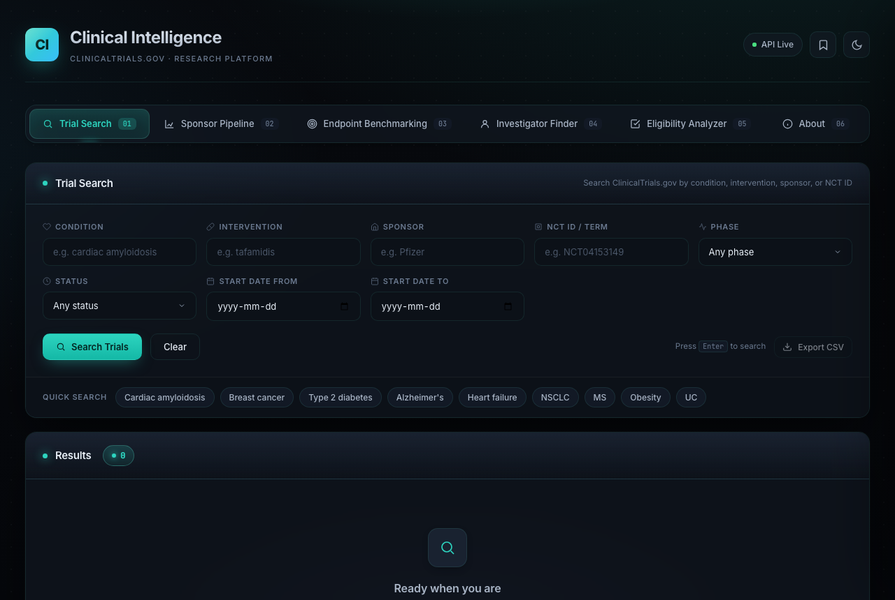

Clinical Intelligence
A standalone, single-file dashboard for clinical-trial competitive intelligence, built directly on the public ClinicalTrials.gov API. Search trials, map sponsor pipelines, benchmark endpoints, find investigators, and analyze eligibility, all from one HTML file.
What it does
Turns the ClinicalTrials.gov registry into a working research tool for feasibility, competitive intelligence, protocol design, and site selection. Everything runs client-side in a single HTML file against the live, public API, no backend and no build step.
How it works
- Trial Search - multi-field search (condition, intervention, sponsor, NCT, phase, status, dates) with a paginated results table and a per-study detail modal.
- Sponsor Pipeline - pulls a sponsor's full portfolio and charts it by phase and status, with KPIs and top therapeutic areas.
- Endpoint Benchmarking - extracts and normalizes primary endpoints across an indication to show what is standard, broken down by phase.
- Investigator Finder - aggregates principal investigators and sites for a condition (with optional geography), ranked by trial count.
- Eligibility Analyzer - summarizes age, sex, healthy-volunteer status, and common eligibility keywords across an indication.
- Every table sorts, opens a full detail modal, and exports to CSV.
This one is a live tool, not an offline demo: it queries the public API (up to 1000 studies per query) and loads ApexCharts, SheetJS, and fonts via CDN, so it needs an internet connection. Download clinical-intelligence.html and open it in any modern browser, or launch it here to try it.

Static preview - launch the live tool or download it to run yourself